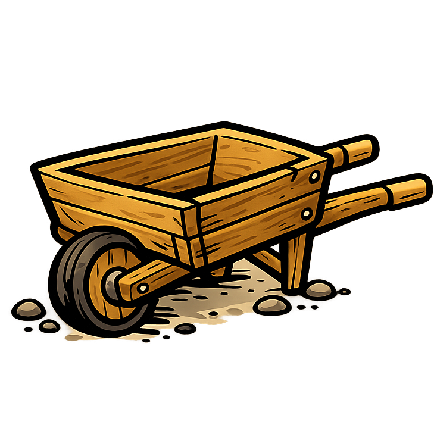

<h2 class="book-page-title" data-book-bind="technology.wheelbarrow.label"></h2>
<p>

A wheelbarrow makes carrying and gathering easier. It gathers food and materials 1.5 times faster and carries 4 times as much, but moves at half speed.
</p>
<p>

Building <span data-book-bind="vehicle.wbarrow.label"></span> costs:
</p>
<p>

<span data-book-bind="vehicle.wbarrow.buildCost.lumber"></span>

<span data-book-bind="vehicle.wbarrow.buildCost.stone"></span>
</p>
